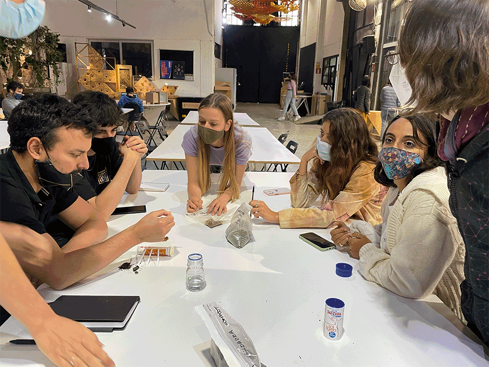
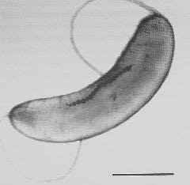

Agri Bio Zero
In these past two weeks, we focused on biology and agriculture with Nuria Conde and Jonathan Minchin. We received an abundance of information and partook in hands-on experimentations including:- Growing bacteria cultures
- Testing soil samples
- Growing Scoby
- Caring for Spirulina
- PCR testing and looking at DNA strains
- Making bioplastics
- Distilling essential oil from bay leaves

The learnings in bio and agro were both super interesting. And without becoming an expert in either field, I realize the most important take-away for me would be to understand the connections and possibilities within these fields and how I can integrate them into my own work. I am interested in the systems of biology and agriculture in which individual agents take part in, but create an entirely different outcome. There were many parallels that could be drawn between design systems and scientific systems and human systems in general. ...
Assignment: Scientific Paper
The microbiome-gut-brain and social behavior July 2021, Journal for the Theory of Social Behaviour, by Gabe Ignatow
In this paper, Ignatow explores the impact the microbioime-gut-brain (MGB), nutrition and dietary habits can have on social behaviors. “Focusing on nutrition as a critical element of the social environment influencing the gene-environment interactions and a range of social behaviors.” (Ignatow et al. 1). He starts by explaining the concept of relational biology, which “focus on how social and physical environments influence fundamental biological process marks these approaches as emergentist and sociological (Landecker, 2011; Meloni, 2014) rather than in any way reductionistic.” (Ignatow et al. 2). In my understanding, relational biology looks at biology in relation to, and not independent of, psychology and sociology. Ignatow goes on to outline the different biological systems that are in play within the MGB process: The ENS, BBB, Hormones and Neurotransmitters, and how each of these are affected by nutritional intake and in effect produce stress and psychiatric disorders. He outlines these as implications for an alternative way to understand and alter extreme social behaviors and psychiatric disorders.
I believe this research is useful for the future because it looks at a holistic (non-reductionist) way of approaching disease and social behaviors. Through food, it builds a connection that is tangible for most of us who may not understand what is going on inside our bodies, but suffer the effects of malnutrition. In order to get to the root of these issues, I believe we need to look at our bodies, minds, and environments holistically, and understand the chain of connections that come along with it. This is in contrast to the field of Western medicine, where issues in the body are studied and treated in isolation. I believe this holistic and relational approach is applicable in any field of study: design, biology, technology ecology, agriculture, or sociology, as we are moving towards an understanding that everything is interconnected and impacts everything else. For example, in design we can look at industrial production and the climate crisis. I thought this article was an interesting and important study in a step towards a more connected understanding of our bodies, minds, environments and behaviors.
Assignment: iGEM Experiment
My mission is to create a fabric that is able to generate and retain through embedding bacteria that’s able to generate heat. To be used for people without homes or the general public in extreme cold environments.
Method
Through online research, I came upon the Magnetospirillum magneticum bacteria that has been tested in producing heat through exposure to magnetic fields.

“In this work, we examine the mechanisms of heat production by whole intact cells of magnetotactic bacteria, Magnetospirillum magneticum strain AMB-1, as well as by their extracted chains of magnetosomes or extracted individual magnetosomes when they are exposed to an oscillating magnetic field of frequency 108 kHz and field amplitudes varied between 23 mT and 88 mT.” (E. Alphandéry, S. Faure, L. Raison, E. Duguet, P. A. Howse, and D. A. Bazylinski)
Hypothesized process
- Extract DNA information from Magnetospirillum magneticum bacteria strand
- Splice it into a biomaterial thread
- Use the thread with bacteria DNA and magnetic fiber materials to weave fabric
- Using different types of magnetic fibers will (hopefully) generate a magnetic field upon contact of materials and the bacteria will work to generate heat.